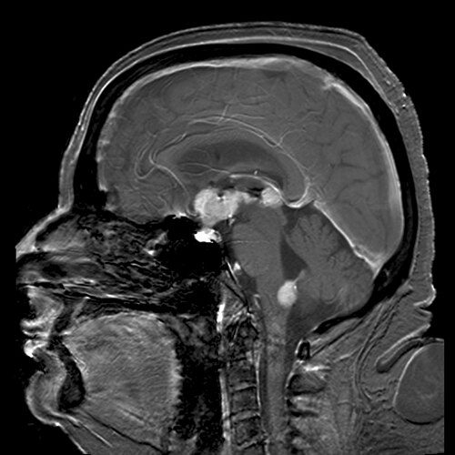

General information only. It does not replace advice from your care team and should not be used to choose a treatment.


At a glance
| How common | 2-4% of primary brain tumours; rising in older people |
| Who | Over-60s; people with weakened immunity (HIV, transplants) |
| Type | Diffuse large B-cell lymphoma |
| Treatment | High-dose methotrexate with other drugs; consolidation with autologous transplant |
Key points
- It may also affect the eyes (vitreoretinal lymphoma) and cerebrospinal fluid: eye examination and lumbar puncture are done.
- Steroids should not be given before biopsy if it is suspected, as they can make the tumour temporarily vanish and hinder diagnosis.
- Surgery is limited to stereotactic biopsy.
- Treatment: high-dose methotrexate with rituximab and other drugs (MATRix), followed by high-dose chemotherapy with autologous transplant in fit patients, or maintenance in older people. Ibrutinib and CAR-T at relapse.
Outlook
With intensive treatment, more than half of younger patients are long-term survivors.
See also: Diffuse large B-cell lymphoma, Brain tumours.
Sources
- Ferreri AJM, et al. Primary central nervous system lymphoma: ESMO Clinical Practice Guideline. Ann Oncol. 2023;34:479-494.
- Ferreri AJM, et al. Chemoimmunotherapy with methotrexate, cytarabine, thiotepa, and rituximab (MATRix regimen) in primary CNS lymphoma (IELSG32). Lancet Haematol. 2016;3:e217-e227.00036-3)